3.3 校验范围、圆弧近似与导出设置
本节介绍高级参数面板下半部分的三个核心分组：校验范围（9 项）、圆弧近似（5 项）以及 基本轮廓导出（3 项）。
一、校验范围 分组（共 9 项）
本组参数按产品零件图规定的公差范围填写，用于对以下三类结果进行全自动合格判定（当启用 单圆弧求法 = 按审核优化 时，优化器也会以本组范围作为优化目标约束）：
- 球道截面设计【理论值】
- 精确刀具切出的球道【实际值·仿真】
- 圆弧近似刀具切出的球道【实际值·仿真】
1. 顶隙下限 (clearance_min) 与 顶隙上限 (clearance_max)
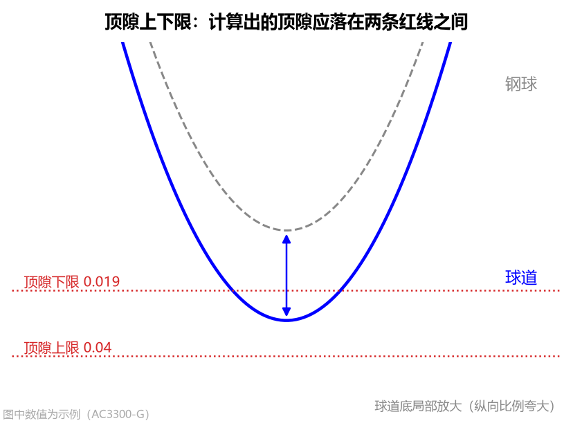
- 界面名称：
顶隙下限/顶隙上限（单位：mm，默认值：0.019/0.040） - 设置方法：按零件图规定的球道底顶隙允许范围填写（如
AC3300-G为0.019 ~ 0.040 mm，AC10000为0.02 ~ 0.10 mm）。 - 图表与结果联动：
- Tab 2：球道设计截面 与 Tab 5 / Tab 6 的球道底放大图中，会用两条灰色水平点线标出
顶隙下限和顶隙上限； - 理论顶隙及仿真钢球落座后的
实际顶隙在区间内时显示绿色OK，否则标红显示超出范围!。
- Tab 2：球道设计截面 与 Tab 5 / Tab 6 的球道底放大图中，会用两条灰色水平点线标出
2. 接触角跨距下限 (span_min) 与 接触角跨距上限 (span_max)
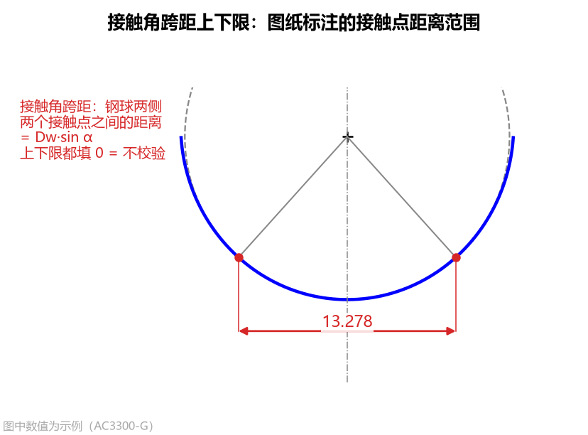
- 界面名称：
接触角跨距下限/接触角跨距上限（单位：mm，默认值：0.0/0.0） - 什么是接触角跨距：在球道法向截面内，钢球与左右两侧球道壁接触点之间的水平距离（理论值为 ）。
- 设置方法：
- 若产品图直接标注了跨距范围（如
AC10000标注12.3 ~ 14.0 mm），按图纸填入下限和上限； - 若图纸未标此项，保持两项都填
0（代表不校验，仅作为参考数值输出）。
- 若产品图直接标注了跨距范围（如
3. 接触角下偏差 (alpha_tol_lo) 与 接触角上偏差 (alpha_tol_hi)（升级！）
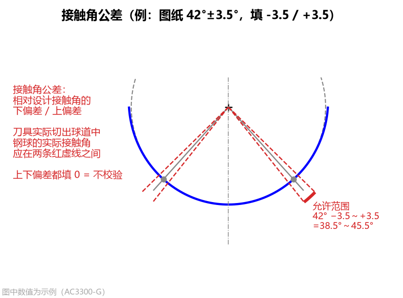
- 界面名称：
接触角下偏差/接触角上偏差（单位：°，默认值：-2.0/2.0） - 相对偏差输入方式：
- 相对于设计接触角 的下偏差与上偏差，合格区间为 ；
- 示例 1：图纸标注
42° ± 2°，则下偏差填-2，上偏差填2（合格范围40° ~ 44°）； - 示例 2：图纸标注
42° ± 3.5°（如AC10000），则下偏差填-3.5，上偏差填3.5（合格范围38.5° ~ 45.5°）； - 示例 3：不对称公差如
42° -1°/+2°，则下偏差填-1，上偏差填2； - 不校验填法：下偏差和上偏差都填
0时表示不校验。 - 兼容性提示：载入含旧版
alpha_min / alpha_max的参数文件时，软件会自动换算为相对偏差。
4. PCD 下偏差 (pcd_tol_lo) 与 PCD 上偏差 (pcd_tol_hi)（新增！）
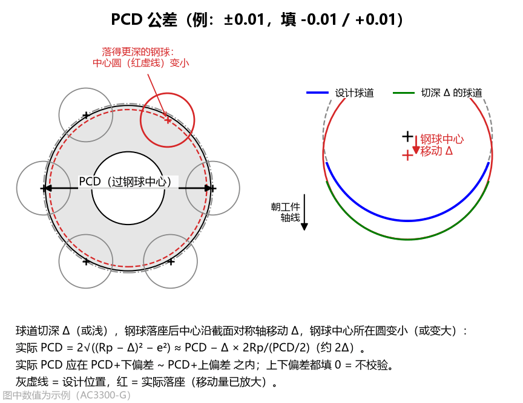
- 界面名称：
PCD 下偏差/PCD 上偏差（单位：mm，默认值：-0.01/0.01） - 为什么切出的球道会改变“实际 PCD”？
- 图纸上的 PCD（节圆直径） 是把量棒/钢球放进加工好的球道后，钢球中心所在分布圆的直径；
- 当成型刀切出的球道比理论截面略深或略浅 时，钢球实际落座后的中心会沿截面对称轴移动 ，从而使钢球中心所在的分布圆直径发生变化：
- 也就是说，钢球中心每向球道开口方向移动
+5 μm，实际 PCD 就会增大约+10 μm（+0.01 mm）！
- 设置方法：
- 按图纸规定的 PCD 公差填写相对偏差：例如
PCD ± 0.01 mm，则下偏差填-0.01，上偏差填0.01； - 若下偏差和上偏差都填
0，则只显示算出的实际 PCD数值而不做超限报警。
- 按图纸规定的 PCD 公差填写相对偏差：例如
5. 轮廓度公差 (profile_tol)
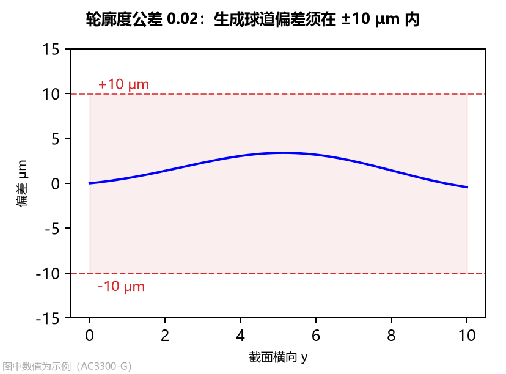
- 界面名称：
轮廓度公差（单位：mm，默认值：0.02，即±10 μm） - 工程含义与图表联动：
- 零件图规定的球道法向截面轮廓度总公差带宽（判定时按正负一半即 计算）；
- 圆弧近似刀具切出球道与设计截面的最大法向偏差 时显示绿色
合格，超出则标红显示超差!。
二、圆弧近似 分组（共 5 项）
为了方便车间使用标准圆弧砂轮修整和光学投影检测，本组参数可将精确接触段近似为单圆弧或多段相切圆弧刀具，并支持控制单圆弧审核优化目标与刀尖延伸。
1. 圆弧段数 (arc_count)
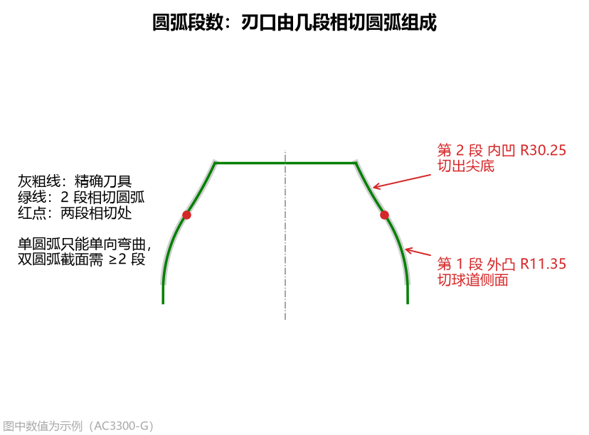
- 界面名称：
圆弧段数（可选项：1/2/3/4/5段，默认值：1） - 选型指南：
1段（单圆弧 + 圆柱，默认）：适用于椭圆截面和常规点表截面（精度可达2 ~ 5 μm），或配合下方按审核优化用于双圆弧截面；可生成客户图纸 Table 1（ 常数表）。2 ~ 5段（多段首尾相切圆弧 + 圆柱）：适用于双圆弧（尖底）截面或曲率变化剧烈的截面。用 段首尾相切（ 连续）的外凸+内凹圆弧贴合“凸转凹”拐点（如AC10000选3段时截面偏差仅7.0 μm）。
2. 单圆弧求法 (arc_fit，仅当 圆弧段数 = 1 时显示）
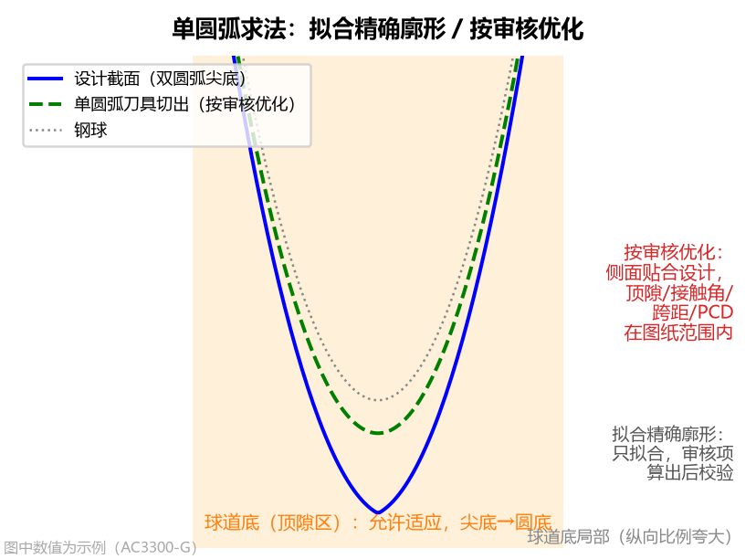
- 界面名称：
单圆弧求法（可选项：拟合精确廓形/按审核优化，默认值：拟合精确廓形） - 两种求法对比：
拟合精确廓形（默认，约 1 秒完成）：直接对精确刀具接触段做几何最小二乘圆拟合，使整条刀刃与精确刀具最贴近。适用于所有椭圆截面和常规点表(CSV)截面。按审核优化（专为双圆弧截面单圆弧刀设计，约需 20~60 秒）：通过反向包络仿真与钢球实际落座循环优化单圆弧的 与圆心坐标 ，球道底部非工作区允许从“尖底”适应为单圆弧切出的“圆底”，同时兼顾球道侧面贴合与钢球实际落座审核项（顶隙、接触角、跨距、实际 PCD）。
3. 审核优化目标 (audit_goal，仅当 圆弧段数 = 1 且 单圆弧求法 = 按审核优化 时显示）（新增！）
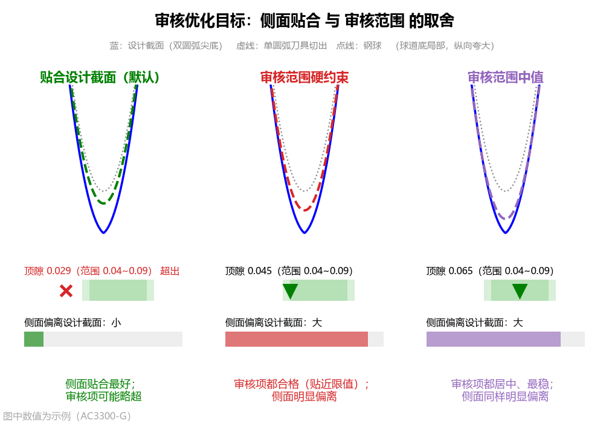
- 界面名称：
审核优化目标 - 可选项：
贴合设计截面（默认） /审核范围硬约束/审核范围中值 - 为什么要区分三种优化目标？ 对于双圆弧（尖底）截面，单圆弧刀具没有拐点，因此“球道侧面贴合设计双圆弧”与“球道底顶隙/PCD 等审核项严格达标”之间往往存在几何取舍。您可根据客户验收标准在以下三种策略中自由切换：
| 优化目标选项 | 核心优化策略 | 适用场景与特点 |
|---|---|---|
贴合设计截面（默认） |
球道侧面贴合优先，审核范围为软约束（耗时约 20~40 秒） | 刀刃紧贴精确刀具的球道工作侧面（接触点一半以外偏差仅数微米）；若个别审核项（如顶隙）与贴合侧面存在几何冲突，允许审核项略超并在结果栏给出提示。 |
审核范围硬约束 |
所有已设审核范围作为硬约束必须满足，在此前提下尽量贴合侧面（耗时约 30~60 秒） | 当客户只按顶隙、接触角、接触角跨距、实际 PCD 四个审核项的范围验收时选用；确保所有审核项 100% 落在公差带内（可能贴近限值边界），但球道侧面会偏离理论双圆弧。 |
审核范围中值 |
把顶隙、接触角、跨距、实际 PCD 都推向各自上下限的正中间（耗时约 30~60 秒） | 追求各项审核指标都居中、留有最大安全余量且最稳定；同样会牺牲球道侧面与理论双圆弧的贴合度。 |
4. 取整位数 (arc_decimals)
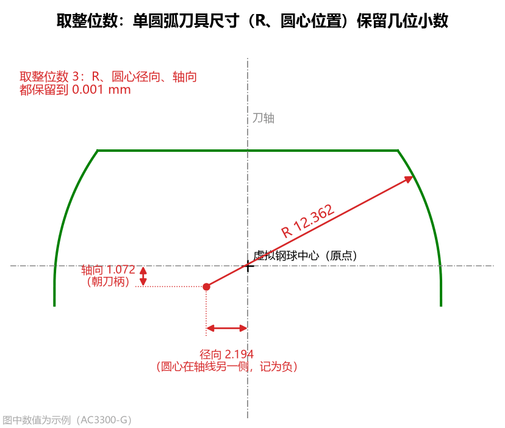
- 界面名称：
取整位数（可选项：不取整/0~5位，默认值：3） - 工程含义：将圆弧的 半径 、圆心径向、圆心轴向（及多段圆弧交界 ） 按指定小数位四舍五入作为最终磨刀尺寸，并直接用取整后的尺寸进行反向包络仿真与落座校核。
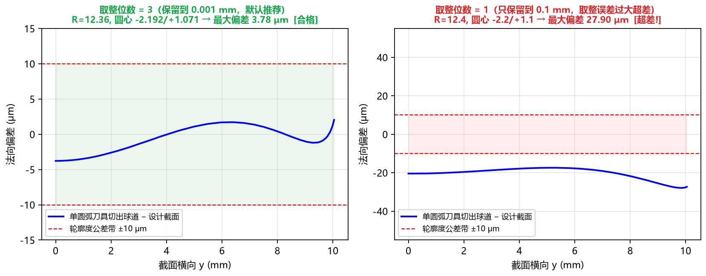
5. 刀尖延伸 (arc_tip_ext)（新增！）
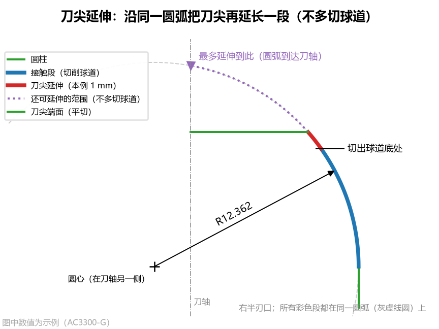
- 界面名称：
刀尖延伸（单位：mm，默认值：0.0） - 工程痛点与作用：
- 默认情况下（
刀尖延伸 = 0），圆弧近似刀具的圆弧刃口刚好在切出球道底处（）被刀尖平端面截断，这意味着切球道底的切削点正好落在圆弧与刀尖端面的尖角交界处，加工时该尖角容易集中磨损； - 当填入
刀尖延伸 > 0（例如填0.5或1.0 mm）时，软件会让刀尖沿着同一段圆弧（多段圆弧时为最靠近刀尖的那一段圆弧）继续朝刀尖方向延伸指定轴向长度，然后再平切收口！
- 默认情况下（
- 为什么刀尖沿同一圆弧延伸不会把球道底切深？
- 因为外凸圆弧在越过切球道底的切点之后，继续往刀尖方向走时，圆弧半径快速内缩，在包络摆动过程中处于球道底包络面之内，既把尖角推离了实际切削区，又绝不会多切球道底一分一毫！
- 最大可延伸范围自动计算：
- 软件会自动计算并显示该圆弧在不切深球道底、不过刀轴中心（）、不过圆弧最高点的前提下最多可延伸到的位置 （显示在结果栏第 四 分块、Tab 6 左上角紫色点线及
arc_tool.dxf视图 ② 中）； - 注意：若设定的延伸终点超过了【刀尖与廓形】中的
刀尖高度，延伸会被刀尖高度截断并在结果栏提示未全部做到，此时只需将刀尖高度一并调大即可。
- 软件会自动计算并显示该圆弧在不切深球道底、不过刀轴中心（）、不过圆弧最高点的前提下最多可延伸到的位置 （显示在结果栏第 四 分块、Tab 6 左上角紫色点线及
三、基本轮廓导出 分组（共 3 项，控制 Table 1 / Table 2 导出格式）
当您需要点击左下角的 方程常数（Table 1） 或 基本轮廓（Table 2） 导出客户图纸格式的数据表时，可通过以下 3 个选项控制输出方式（这 3 个选项均不影响刀具形状、DXF 图形和合格判定）：
1. 基本轮廓点数 (n_basic)
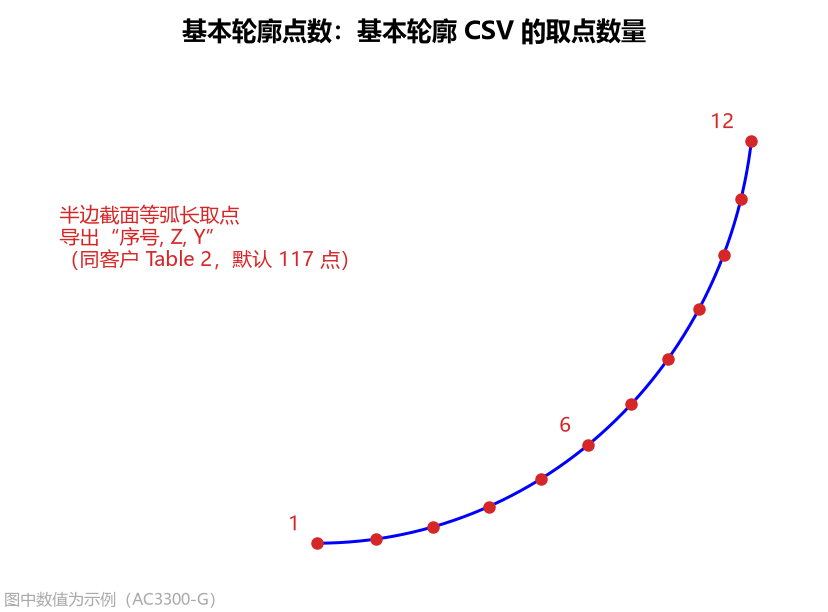
- 界面名称：
基本轮廓点数（单位：点，默认值：117） - 工程含义：控制导出
基本轮廓（Table 2）（table2_basic_profile.csv）时，在半边球道截面上等弧长取点的总数量。
2. 基本轮廓终点 (basic_end)
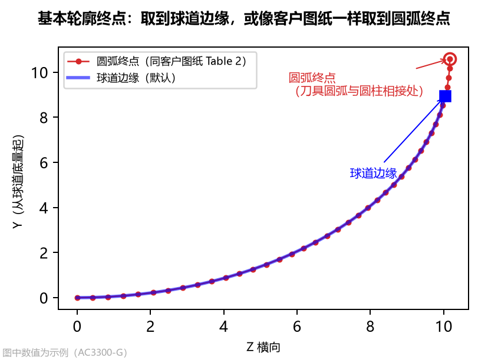
- 界面名称：
基本轮廓终点（可选项：球道边缘/圆弧终点，默认值：球道边缘） - 选择建议：
球道边缘（默认）：取到球道与星形套外球面相交处为止，即零件上实际存在的球道范围；圆弧终点：仅单圆弧刀具（圆弧段数 = 1）有效，取到单圆弧刀具圆弧段的末端（圆弧与圆柱相切交界处，对应参数方程终点 ）。需与客户图纸 Table 2 逐点对照时选此项。
3. 常数依据 (table_basis)
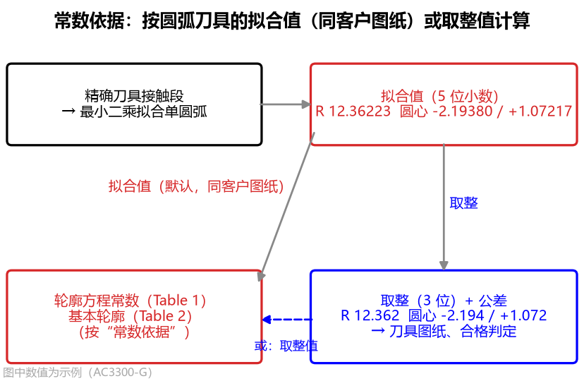
- 界面名称：
常数依据（可选项：拟合值/取整值，默认值：拟合值） - 选择建议：
拟合值（默认，同客户图纸做法）：按单圆弧刀具取整前的尺寸（保留 5 位小数）计算 和基本轮廓；取整值：按取整位数四舍五入后的磨刀尺寸计算 。